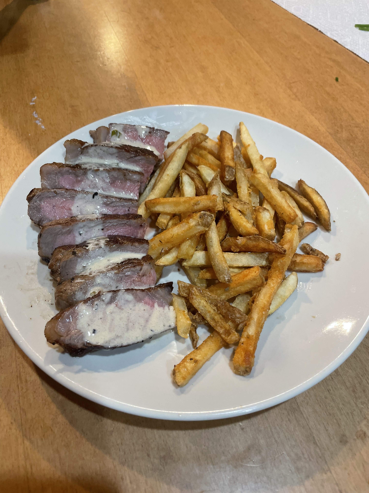

STEAK FRITES

Difficulty: Easy
Steak and french fries with sauce
- Steak
- Fries
- White Wine
- Heavy Cream
- Dijon Mustard
- Chives
- Salt & Pepper
- Vegetable Oil
- Season steak after letting rest at room temperature
- Fill a pot halfway with oil to deep fry frozen fries (or fresh if preferred)
- Cook steak to preferred doneness
- Place fries in oil pot, occasionally stirring to prevent fries from sticking to eachother or pot
- Remove steak from frying pan and let rest
- In the same frying pan the steak was in, pour in white wine to deglaze the pan
- Add heavy cream and dijon mustard, adjust according to taste
- Once sauce is at preferred taste levels and has thickened up a bit, add chopped chives
- When fries are finished, remove from pot and place on paper towel to remove excess oil
- After steak has thoroughly rested (at least 15 minutes) cut into slices to plate
- Plate the slices of steak alongside fries and generously drizzle over steak (enough sauce to dip fries in)